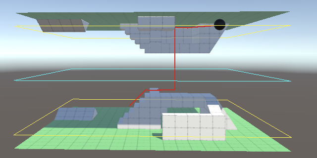

Complex Gravity
Gravity Planes, Spheres, and Boxes
- Support multiple gravity sources.
- Limit the range of gravity.
- Make gravity decrease with distance.
- Create planar, spherical, and box-shaped gravity sources.
This is the sixth installment of a tutorial series about controlling the movement of a character. It extends our custom gravity by supporting multiple gravity sources, including planes, spheres, and boxes.
This tutorial is made with Unity 2019.2.21f1. It also uses the ProBuilder package.
Multiple Gravity Sources
If you only ever need the same gravity source then the approach introduced in the previous tutorial can suffice. But if you need to use different kinds of gravity—either a different one per scene or multiple in the same scene—then a more generic approach is needed.
Default Gravity Source
To support multiple gravity sources in a scene we'll create a new GravitySource component type, with a public GetGravity method similar to the one in CustomGravity that has a single position parameter, only in this case it isn't static. The simplest implementation is to just return Physics.gravity, so we'll do that. This can be used as a default gravity source that can be added to any scene, which would make our sphere work with standard physics gravity.
using UnityEngine;
public class GravitySource : MonoBehaviour {
public Vector3 GetGravity (Vector3 position) {
return Physics.gravity;
}
}
Gravity Source List
To support more than one gravity source per scene CustomGravity will have to keep track of all the active sources. We'll do that by giving it a static list of sources.
using UnityEngine;
using System.Collections.Generic;
public static class CustomGravity {
static List<GravitySource> sources = new List<GravitySource>();
…
}
Adjust the GetGravity method that has only a position parameter so it loops through the sources and accumulates their gravity.
public static Vector3 GetGravity (Vector3 position) {
Vector3 g = Vector3.zero;
for (int i = 0; i < sources.Count; i++) {
g += sources[i].GetGravity(position);
}
return g;
}
Do the same thing in the other GetGravity method, which also provides the up axis. Now we have no choice but to derive the axis by normalizing and negating the final gravity vector.
public static Vector3 GetGravity (Vector3 position, out Vector3 upAxis) {
Vector3 g = Vector3.zero;
for (int i = 0; i < sources.Count; i++) {
g += sources[i].GetGravity(position);
}
upAxis = -g.normalized;
return g;
}
GetUpAxis has to be adjusted in the same way.
public static Vector3 GetUpAxis (Vector3 position) {
Vector3 g = Vector3.zero;
for (int i = 0; i < sources.Count; i++) {
g += sources[i].GetGravity(position);
}
return -g.normalized;
}
Registering and Unregistering Sources
To make it possible to change the active gravity sources add public Register and an Unregister methods. They simply add or remove a given gravity source to or from the list.
public static void Register (GravitySource source) {
sources.Add(source);
}
public static void Unregister (GravitySource source) {
sources.Remove(source);
}
The idea is that a single source is only ever registered once, otherwise its effect would be multiplied. Likewise, it only makes sense to unregister a source that's been registered earlier. It's fine to register and unregistered the same source more than once though, to temporarily deactivate it. We can add assertions to verify this by invoking Debug.Assert, to catch programming mistakes.
public static void Register (GravitySource source) {
Debug.Assert(
!sources.Contains(source),
"Duplicate registration of gravity source!", source
);
sources.Add(source);
}
public static void Unregister (GravitySource source) {
Debug.Assert(
sources.Contains(source),
"Unregistration of unknown gravity source!", source
);
sources.Remove(source);
}
We can make GravitySource register and unregister itself when appropriate by doing so in its OnEnable and OnDisable methods, respectively. That way it works when a source gets created, destroyed, activated, deactivated, enabled, disabled, and also across hot reloads of the editor.
void OnEnable () {
CustomGravity.Register(this);
}
void OnDisable () {
CustomGravity.Unregister(this);
}
Now we can adjust all our scenes to once again use default gravity, simply by adding a game object with the GravitySource component to each.
Allowing Extension
The idea is that GravitySource is the basis for other kinds of gravity sources, just like MonoBehaviour is the basis for all custom component types that we create. New gravity source types will do their work by overriding the GetGravity method with their own implementation. To make this possible we have to declare this method to be virtual.
public virtual Vector3 GetGravity (Vector3 position) {
return Physics.gravity;
}
Gravity Planes
The default physics gravity only defines a single vector that represents a universal downward pull. The simplest extension of that idea is to define a gravity plane. This does exactly the same except that a plane also splits space into everything above and below it. We can use that to limit the range of the plane's gravity.
New Gravity Source Type
Create a new GravityPlane component type that extends GravitySource. Give it a configurable gravity field. This is the acceleration it applies to everything in its range, pulling it down. So a positive value represents normal attraction via gravity, while a negative value would repel, representing antigravity.
Override GetGravity to have it return a vector pointing straight up, scaled by the negated configured gravity. Overriding a method must be done explicitly by adding the override keyword to it.
using UnityEngine;
public class GravityPlane : GravitySource {
[SerializeField]
float gravity = 9.81f;
public override Vector3 GetGravity (Vector3 position) {
Vector3 up = Vector3.up;
return -gravity * up;
}
}
We can now create a gravity plane that works just like the default physics gravity vector, if it were configured to point straight down.
We can also support planes with any orientation, by using the up vector of the game object's transformation instead.
Vector3 up = transform.up;
Visualizing the Plane
To make it easier to see where our plane is we'll visualize it with some gizmos. These are drawn in the scene window, and also in the game window of the editor if you enable the toggle option for that. Although the plane is infinite we have to use a finite visualization, so we'll use a square.
Drawing gizmos is done by adding a OnDrawGizmos method and using various static methods and properties of the Gizmos class. Begin by setting Gizmos.color to yellow and drawing a wireframe cube via Gizmos.DrawWireCube, positioned at the origin, with its size set to (1,0,1) so it gets flattened to a square.
void OnDrawGizmos () {
Gizmos.color = Color.yellow;
Gizmos.DrawWireCube(Vector3.zero, new Vector3(1f, 0f, 1f));
}
Gizmos are drawn in world space by default. To correctly position and rotate the square we'll have to use the transformation matrix of our plane, by assigning its localToWorldMatrix to Gizmos.matrix. This also allows us to scale the plane object so the square is easier to see, even though that doesn't influence the plane's gravity.
Gizmos.matrix = transform.localToWorldMatrix; Gizmos.color = Color.yellow; Gizmos.DrawWireCube(Vector3.zero, new Vector3(1f, 0f, 1f));
As an example, I made a small scene containing two opposite 20×20 rectangular areas with accompanying gravity planes, positioned a bit above and below them. The bottom area is normal while the top one represents an upside-down area. The top plane is rotated so it is upside down as well, which means that its gravity is flipped.

Gravity Range
When two planes with the same gravity are pulling in opposite directions they cancel each other, resulting in no gravity at all. If we want a scene where gravity pulls down in one place and up in another we have to limit the influence of each plane. We'll do that by adding a configurable range to GravityPlane. It represents how far above—relative to the plane itself—its gravity is in effect, so the minimum range is zero. The plane's influence has no limit below itself, going on forever.
We can find the distance of the position in GetGravity by taking the dot product of the plane's up vector and the position minus the plane's position. If the distance is greater than the range then the resulting gravity should be zero.
[SerializeField, Min(0f)]
float range = 1f;
public override Vector3 GetGravity (Vector3 position) {
Vector3 up = transform.up;
float distance = Vector3.Dot(up, position - transform.position);
if (distance > range) {
return Vector3.zero;
}
return -gravity * up;
}
We can visualize this range by drawing a second square, initially one unit up. Let's give it a cyan color.
void OnDrawGizmos () {
Gizmos.matrix = transform.localToWorldMatrix;
Vector3 size = new Vector3(1f, 0f, 1f);
Gizmos.color = Color.yellow;
Gizmos.DrawWireCube(Vector3.zero, size);
Gizmos.color = Color.cyan;
Gizmos.DrawWireCube(Vector3.up, size);
}
But in this case we want to use the range for the offset, unmodified by the scale of the plane's game object. We can do that by constructing a matrix ourselves via the Matrix4x4.TRS method, passing it a position, rotation, and scale. We only need to replace the Y component of the object's local scale with the range.
Vector3 scale = transform.localScale; scale.y = range; Gizmos.matrix = Matrix4x4.TRS(transform.position, transform.rotation, scale);
I configured the planes so their range squares end up in the exact same place. Thus it shows the plane where gravity flips.


If the range is zero then we need not bother drawing the cyan square.
if (range > 0f) {
Gizmos.color = Color.cyan;
Gizmos.DrawWireCube(Vector3.up, size);
}
Camera Alignment Speed
We can now walk on one of the sides of the scene and jump to go to the other side, assuming that we can jump high enough. When we do so gravity flips, which also suddenly flips the camera, which is disorienting. We can improve the experience of a sudden gravity change by slowing down the realignment of OrbitCamera.
Add a configurable up alignment speed that limits how fast the camera adjusts its up vector, expressed in degrees per second. Let's use 360° as the default so a full gravity flip takes half a second to complete.
[SerializeField, Min(0f)] float upAlignmentSpeed = 360f;
We now have to adjust how the gravity alignment quaternion get's adjusted. Begin by moving that code to a separate UpdateGravityAlignment method and use variables to track the current and desired up vectors.
void LateUpdate () {
//gravityAlignment =
// Quaternion.FromToRotation(
// gravityAlignment * Vector3.up,
// CustomGravity.GetUpAxis(focusPoint)
// ) * gravityAlignment;
UpdateGravityAlignment();
UpdateFocusPoint();
…
}
void UpdateGravityAlignment () {
Vector3 fromUp = gravityAlignment * Vector3.up;
Vector3 toUp = CustomGravity.GetUpAxis(focusPoint);
Quaternion newAlignment =
Quaternion.FromToRotation(fromUp, toUp) * gravityAlignment;
gravityAlignment = newAlignment;
}
We can find the angle between the up vectors by taking their dot product and converting the result to degrees via Mathf.Acos and multiplying with Mathf.Rad2Deg. The maximum allowed angle is the up alignment speed scaled by the time delta.
Vector3 fromUp = gravityAlignment * Vector3.up; Vector3 toUp = CustomGravity.GetUpAxis(focusPoint); float dot = Vector3.Dot(fromUp, toUp); float angle = Mathf.Acos(dot) * Mathf.Rad2Deg; float maxAngle = upAlignmentSpeed * Time.deltaTime;
The arccos function only produces valid results for inputs that fall within the −1–1 range, inclusive. Due to precision limitations it is possible that the dot product ends up a tiny bit outside that range, which would produce not-a-number—NaN—values. To prevent this use Mathf.Clamp to sanitize the dot product.
float dot = Mathf.Clamp(Vector3.Dot(fromUp, toUp), -1f, 1f);
If the angle is sufficiently small then we can directly use the new alignment as usual. Otherwise we have to interpolate between the current and desired rotation, with the maximum angle divided by the desired angle as the interpolator. We use Quaternion.Slerp for that, which performs spherical interpolation so we get proper rotations.
Quaternion newAlignment =
Quaternion.FromToRotation(fromUp, toUp) * gravityAlignment;
if (angle <= maxAngle) {
gravityAlignment = newAlignment;
}
else {
gravityAlignment = Quaternion.Slerp(
gravityAlignment, newAlignment, maxAngle / angle
);
}
As we've already made sure that we only interpolate when necessary the interpolator is guaranteed to lie within the 0–1 range, so we can use SlerpUnclamped instead, avoiding unnecessary extra clamping.
gravityAlignment = Quaternion.SlerpUnclamped( gravityAlignment, newAlignment, maxAngle / angle );
The interpolation takes the shortest path, but in the case of a 180° flip it could go in any direction. The math prefers a certain orientation so it will always go the same way, even if that might appear weird.
Gravity Falloff
The point of the plane's range is to gradually decrease its gravity instead of suddenly cutting it off. To demonstrate the usefulness of this I returned to the gravity box scene and added a gravity plane to all of the six sides of the box. I limited their range so most of the open space in the middle of the box has no gravity. Anything floating there either remains motionless or keeps the momentum it already had.
With a binary cutoff of gravity per plane, weird things happen near the edges and corners of the cube. Gravity suddenly changes by steep angles and it's hard to navigate. We can improve this by linearly decreasing the gravity of GravityPlane as distance goes from zero up to the maximum range. That's done by simply multiplying it by one minus the distance divided by the range, if the position lies above the plane.
public override Vector3 GetGravity (Vector3 position) {
…
if (distance > range) {
return Vector3.zero;
}
float g = -gravity;
if (distance > 0f) {
g *= 1f - distance / range;
}
return g * up;
}
Gravity now transitions more smoothly as we approach an edge or corner of the box. It's still weird though and it can be hard to escape from corners, because three planes are pulling there which results in increased gravity. We'll come up with a better solution later.
Gravity Spheres
Now that we have a functional gravity plane let's apply the same approach to a sphere.
Radius and Falloff
Create a GravitySphere with a configurable gravity, outer radius, and outer falloff radius. I use the term outer radius instead of just radius because it represents the distance up to which gravity is at full strength. This need not match a sphere's surface radius. In fact, it's a good idea to extend it far enough so the regular play area experiences gravity of a constant strength. That makes it much easier to design for. Otherwise you'll find that a regular jump at a slightly elevated position could already send you into space.
In this case we can use Gizmos.DrawWireSphere to visualize the gravity, again using yellow for the first and cyan for the second threshold. We only need to show the falloff sphere if it's larger than the outer sphere.
using UnityEngine;
public class GravitySphere : GravitySource {
[SerializeField]
float gravity = 9.81f;
[SerializeField, Min(0f)]
float outerRadius = 10f, outerFalloffRadius = 15f;
void OnDrawGizmos () {
Vector3 p = transform.position;
Gizmos.color = Color.yellow;
Gizmos.DrawWireSphere(p, outerRadius);
if (outerFalloffRadius > outerRadius) {
Gizmos.color = Color.cyan;
Gizmos.DrawWireSphere(p, outerFalloffRadius);
}
}
}

It doesn't make sense for the falloff radius to be smaller than the outer radius, so enforce that it is always at least as large as that in Awake and OnValidate methods.
void Awake () {
OnValidate();
}
void OnValidate () {
outerFalloffRadius = Mathf.Max(outerFalloffRadius, outerRadius);
}
Applying Gravity
In the case of a sphere GetGravity works by finding the vector pointing from the position to the sphere's center. The distance is that vector's magnitude. If it's beyond the outer falloff radius then there's no gravity. Otherwise it's the normalized vector scaled by the configured gravity. Note that again we use a positive gravity to represent standard pulling, while negative gravity would push objects away.
public override Vector3 GetGravity (Vector3 position) {
Vector3 vector = transform.position - position;
float distance = vector.magnitude;
if (distance > outerFalloffRadius) {
return Vector3.zero;
}
float g = gravity;
return g * vector.normalized;
}

We already calculated the vector's length, so we can divide the configured gravity by that to account for the vector's length instead of normalizing it.
float g = gravity / distance; return g * vector;
Linearly reducing gravity between the outer radius and outer falloff radius works like the reduction for the plane. We just have to change the math so it falls in the correct range. So we multiply by one minus the distance beyond the outer radius divided by the falloff range. That range is equal to the falloff radius minus the outer radius. I isolated that last bit in a separate falloff factor and stored in it a field, initializing it in OnValidate. This avoids a little math, but I mostly did it because it keeps the code in GetGravity a bit shorter.
float outerFalloffFactor;
public override Vector3 GetGravity (Vector3 position) {
…
float g = gravity / distance;
if (distance > outerRadius) {
g *= 1f - (distance - outerRadius) * outerFalloffFactor;
}
return g * vector;
}
…
void OnValidate () {
outerFalloffRadius = Mathf.Max(outerFalloffRadius, outerRadius);
outerFalloffFactor = 1f / (outerFalloffRadius - outerRadius);
}
With the falloff operational it is now possible to use multiple gravity spheres with overlapping falloff areas, allowing smooth transitions between them. Note that there exists a cancellation zone where objects could end up orbiting in circles in between the spheres, but it's rare to get caught in it when entering the zone with momentum.

Jumping from sphere to sphere might require some practice. Especially when strong gravity fields overlap in large areas you can end up in pretty long unstable orbits. Also, gravity can get a little weird when part of one sphere is strongly affected by another gravity source.
Inverted Spheres
We can also support inverted gravity spheres. Simply negating gravity is not enough, because we might want a gravity dead zone in the center of the sphere. This is an area where the sphere's gravity cancels itself out, which would be true for both normal and inverted planets. It also makes it possible to put another gravity source inside that isn't affected by the larger source. Add a configurable inner falloff radius and inner radius to make this possible. Let's again visualize them with cyan and yellow, but only if they are greater than zero.
[SerializeField, Min(0f)]
float innerFalloffRadius = 1f, innerRadius = 5f;
…
void OnDrawGizmos () {
Vector3 p = transform.position;
if (innerFalloffRadius > 0f && innerFalloffRadius < innerRadius) {
Gizmos.color = Color.cyan;
Gizmos.DrawWireSphere(p, innerFalloffRadius);
}
Gizmos.color = Color.yellow;
if (innerRadius > 0f && innerRadius < outerRadius) {
Gizmos.DrawWireSphere(p, innerRadius);
}
Gizmos.DrawWireSphere(p, outerRadius);
if (outerFalloffRadius > outerRadius) {
Gizmos.color = Color.cyan;
Gizmos.DrawWireSphere(p, outerFalloffRadius);
}
}

The inner falloff radius has a minimum of zero, it sets the minimum for the inner radius, which in turn sets the minimum for the outer radius. Also add an inner falloff factor, which works the same as the other factor except that the order of the radii is reversed.
float innerFalloffFactor, outerFalloffFactor;
…
void OnValidate () {
innerFalloffRadius = Mathf.Max(innerFalloffRadius, 0f);
innerRadius = Mathf.Max(innerRadius, innerFalloffRadius);
outerRadius = Mathf.Max(outerRadius, innerRadius);
outerFalloffRadius = Mathf.Max(outerFalloffRadius, outerRadius);
innerFalloffFactor = 1f / (innerRadius - innerFalloffRadius);
outerFalloffFactor = 1f / (outerFalloffRadius - outerRadius);
}
Now we can abort GetGravity also when the distance is less than the inner falloff radius. If not, we also have to check whether the distance falls inside the inner falloff region and if so scale gravity appropriately.
public override Vector3 GetGravity (Vector3 position) {
Vector3 vector = transform.position - position;
float distance = vector.magnitude;
if (distance > outerFalloffRadius || distance < innerFalloffRadius) {
return Vector3.zero;
}
float g = gravity / distance;
if (distance > outerRadius) {
g *= 1f - (distance - outerRadius) * outerFalloffFactor;
}
else if (distance < innerRadius) {
g *= 1f - (innerRadius - distance) * innerFalloffFactor;
}
return g * vector;
}

Gravity Boxes
We end this tutorial by returning to the gravity box scene. Instead of using six planes to make it possible to walk on the inside of the box, we'll create a single box-shaped gravity source.
Boundary Distance
Create a new GravityBox type for gravity sources that are based on a box. The idea is similar to a sphere, but gravity pulls straight down to the nearest face instead of varying smoothly with direction. We need a configurable gravity for that along with a way to define the box's shape. We'll use a boundary distance vector for that, which acts somewhat like a radius, but for all three dimensions separately. Thus these are the distances from the center straight to the faces, which means that the box's size is twice its boundary distance. The minimum boundary is the zero vector, which we can enforce via the Vector3.Max method. We'll visualize this boundary with a red wireframe cube via Gizmos.DrawWireCube.
using UnityEngine;
public class GravityBox : GravitySource {
[SerializeField]
float gravity = 9.81f;
[SerializeField]
Vector3 boundaryDistance = Vector3.one;
void Awake () {
OnValidate();
}
void OnValidate () {
boundaryDistance = Vector3.Max(boundaryDistance, Vector3.zero);
}
void OnDrawGizmos () {
Gizmos.matrix =
Matrix4x4.TRS(transform.position, transform.rotation, Vector3.one);
Gizmos.color = Color.red;
Gizmos.DrawWireCube(Vector3.zero, 2f * boundaryDistance);
}
}


Inner Distances
We'll again define an inner area where gravity is at full strength, plus an area inside that where it decreases to zero, and inside that an area without gravity. This time radii don't make sense, so we'll define them as inner distances, inward relative to the boundary. These distances are the same for all three dimensions so we can suffice with two configurable values.
[SerializeField, Min(0f)] float innerDistance = 0f, innerFalloffDistance = 0f;
The maximum for both inner distances is equal to the smallest boundary distance. Besides that the inner falloff distance must be at least as big as the inner distance.
void OnValidate () {
boundaryDistance = Vector3.Max(boundaryDistance, Vector3.zero);
float maxInner = Mathf.Min€(
Mathf.Min€(boundaryDistance.x, boundaryDistance.y), boundaryDistance.z
);
innerDistance = Mathf.Min€(innerDistance, maxInner);
innerFalloffDistance =
Mathf.Max(Mathf.Min€(innerFalloffDistance, maxInner), innerDistance);
}
Both distances can be visualized with wireframe cubes, their size equal to the boundary distance minus the relevant distance, doubled.
void OnDrawGizmos () {
Gizmos.matrix =
Matrix4x4.TRS(transform.position, transform.rotation, Vector3.one);
Vector3 size;
if (innerFalloffDistance > innerDistance) {
Gizmos.color = Color.cyan;
size.x = 2f * (boundaryDistance.x - innerFalloffDistance);
size.y = 2f * (boundaryDistance.y - innerFalloffDistance);
size.z = 2f * (boundaryDistance.z - innerFalloffDistance);
Gizmos.DrawWireCube(Vector3.zero, size);
}
if (innerDistance > 0f) {
Gizmos.color = Color.yellow;
size.x = 2f * (boundaryDistance.x - innerDistance);
size.y = 2f * (boundaryDistance.y - innerDistance);
size.z = 2f * (boundaryDistance.z - innerDistance);
Gizmos.DrawWireCube(Vector3.zero, size);
}
Gizmos.color = Color.red;
Gizmos.DrawWireCube(Vector3.zero, 2f * boundaryDistance);
}


Falloff
Calculating the gravity falloff for a box is a bit more complex than for a sphere, but we can once again use a single inner falloff factor.
float innerFalloffFactor;
…
void OnValidate () {
…
innerFalloffFactor = 1f / (innerFalloffDistance - innerDistance);
}
It's easiest to first consider a single gravity component, which is similar to a plane. Create a GetGravityComponent method for that, with two parameters. The first is the relevant position coordinate relative to the box's center. The second is the distance to the nearest face along the relevant axis. It returns the gravity component along the same axis.
float GetGravityComponent (float coordinate, float distance) {
float g = gravity;
return g;
}
If the distance is greater than the inner falloff distance then we're in the null-gravity zone so the result is zero. Otherwise we have to check whether we have to reduce gravity, exactly like we did for the sphere. The only extra step is that we have to flip gravity if the coordinate is less than zero, because that means we're on the opposite side of the center.
float GetGravityComponent (float coordinate, float distance) {
if (distance > innerFalloffDistance) {
return 0f;
}
float g = gravity;
if (distance > innerDistance) {
g *= 1f - (distance - innerDistance) * innerFalloffFactor;
}
return coordinate > 0f ? -g : g;
}
The GetGravity method then has to make the position relative to the box's postion and start with a zero vector. Then calculate the absolute distances from the center, invoke GetGravityComponent for the smallest distance, and assign the result to the appropriate component of the vector. The result is gravity that pulls straight down relative to the nearest face, or pushes toward it in case of negative gravity.
public override Vector3 GetGravity (Vector3 position) {
position -= transform.position;
Vector3 vector = Vector3.zero;
Vector3 distances;
distances.x = boundaryDistance.x - Mathf.Abs(position.x);
distances.y = boundaryDistance.y - Mathf.Abs(position.y);
distances.z = boundaryDistance.z - Mathf.Abs(position.z);
if (distances.x < distances.y) {
if (distances.x < distances.z) {
vector.x = GetGravityComponent(position.x, distances.x);
}
else {
vector.z = GetGravityComponent(position.z, distances.z);
}
}
else if (distances.y < distances.z) {
vector.y = GetGravityComponent(position.y, distances.y);
}
else {
vector.z = GetGravityComponent(position.z, distances.z);
}
return vector;
}
Finally, to support cubes with arbitrary rotation we have to rotate the relative position to align with the cube. We do that by passing it through InverseTransformDirection of its transformation, which ignores its scale. The final gravity vector must be rotated in the opposite way, via TransformDirection.
//position -= transform.position;position = transform.InverseTransformDirection(position - transform.position); … return transform.TransformDirection(vector);
The result of this approach is that gravity suddenly changes orientation when the nearest face changes. This works fine when floating inside the box, but makes traveling between faces on its inside difficult. We'll improve on this shortly.
Outside the Box
Like for the sphere, we'll also support an outer distance and outer falloff distance, along with an outer falloff factor.
[SerializeField, Min(0f)]
float outerDistance = 0f, outerFalloffDistance = 0f;
float innerFalloffFactor, outerFalloffFactor;
…
void OnValidate () {
…
outerFalloffDistance = Mathf.Max(outerFalloffDistance, outerDistance);
innerFalloffFactor = 1f / (innerFalloffDistance - innerDistance);
outerFalloffFactor = 1f / (outerFalloffDistance - outerDistance);
}
Inside the box gravity must change suddenly, but on its outside it gets fuzzier. Suppose that we are moving on the outside of the box, being pulled toward it. If we move past the edge of a face gravity should still pull us down, but if we keep aligning it with the nearest edge then we would fall past the box instead of toward it. This suggests that we should fall toward the nearest edge or corner if we're not directly above a face. Also, distance should be determined relative to that edge or face, so we end up with areas in the shape of rounded cubes.
There is no convenient way to visualize rounded cubes with gizmos, so let's create a simple approximation. Begin by adding a method that draws a closed loop through four points, which we'll use to draw a rectangle.
void DrawGizmosRect (Vector3 a, Vector3 b, Vector3 c, Vector3 d) {
Gizmos.DrawLine(a, b);
Gizmos.DrawLine(b, c);
Gizmos.DrawLine(c, d);
Gizmos.DrawLine(d, a);
}
Next, create a method to draw an outer cube, given a distance. Give it four vector variables and set them up so that we draw a square for the right face at the appropriate distance.
void DrawGizmosOuterCube (float distance) {
Vector3 a, b, c, d;
a.y = b.y = boundaryDistance.y;
d.y = c.y = -boundaryDistance.y;
b.z = c.z = boundaryDistance.z;
d.z = a.z = -boundaryDistance.z;
a.x = b.x = c.x = d.x = boundaryDistance.x + distance;
DrawGizmosRect(a, b, c, d);
}
Then negate the X coordinates of the points so we can draw the left face.
DrawGizmosRect(a, b, c, d); a.x = b.x = c.x = d.x = -a.x; DrawGizmosRect(a, b, c, d);
Repeat this process for the other four faces.
DrawGizmosRect(a, b, c, d); a.x = d.x = boundaryDistance.x; b.x = c.x = -boundaryDistance.x; a.z = b.z = boundaryDistance.z; c.z = d.z = -boundaryDistance.z; a.y = b.y = c.y = d.y = boundaryDistance.y + distance; DrawGizmosRect(a, b, c, d); a.y = b.y = c.y = d.y = -a.y; DrawGizmosRect(a, b, c, d); a.x = d.x = boundaryDistance.x; b.x = c.x = -boundaryDistance.x; a.y = b.y = boundaryDistance.y; c.y = d.y = -boundaryDistance.y; a.z = b.z = c.z = d.z = boundaryDistance.z + distance; DrawGizmosRect(a, b, c, d); a.z = b.z = c.z = d.z = -a.z; DrawGizmosRect(a, b, c, d);
Draw the two outer cubes in OnDrawGizmos, if needed.
void OnDrawGizmos () {
…
if (outerDistance > 0f) {
Gizmos.color = Color.yellow;
DrawGizmosOuterCube(outerDistance);
}
if (outerFalloffDistance > outerDistance) {
Gizmos.color = Color.cyan;
DrawGizmosOuterCube(outerFalloffDistance);
}
}


This shows us the flat areas of the rounded outer cubes, but their rounded boundaries are not shown. We could create a very detailed visualization to show them, but that would require a lot of code. Let's instead suffice with a single additional wireframe cube between the rounded corner points of the cube. These points are at the provided distance from the boundary cubes, offset equally in all three dimensions. Thus the distance that we need is equal to the boundary cube's plus the relevant distance scaled by √(1/3).
void DrawGizmosOuterCube (float distance) {
…
distance *= 0.5773502692f;
Vector3 size = boundaryDistance;
size.x = 2f * (size.x + distance);
size.y = 2f * (size.y + distance);
size.z = 2f * (size.z + distance);
Gizmos.DrawWireCube(Vector3.zero, size);
}

You could also draw lines along the middle of rounded edges, using a distance scaled by √(1/2) in two dimensions, but our current approach should suffice.
Detecting the Sides
Now we must determine whether the given position lies inside or outside the box in GetGravity. We determine this per dimension and count along how many we end up outside. First, check if the position lies beyond the right face. If so, set the vector's X component to the X boundary minus the X position. That adjust the vector to point straight to the face instead of to the center. Also, increment the outside count.
public override Vector3 GetGravity (Vector3 position) {
position =
transform.InverseTransformDirection(position - transform.position);
Vector3 vector = Vector3.zero;
int outside = 0;
if (position.x > boundaryDistance.x) {
vector.x = boundaryDistance.x - position.x;
outside = 1;
}
…
}
If we're not beyond the right face, check if we're beyond the left face instead. If so, adjust the vector accordingly, this time subtracting the position from the negative boundary distance.
if (position.x > boundaryDistance.x) {
vector.x = boundaryDistance.x - position.x;
outside = 1;
}
else if (position.x < -boundaryDistance.x) {
vector.x = -boundaryDistance.x - position.x;
outside = 1;
}
Do the same for the Y and Z faces, independently.
else if (position.x < -boundaryDistance.x) {
vector.x = -boundaryDistance.x - position.x;
outside = 1;
}
if (position.y > boundaryDistance.y) {
vector.y = boundaryDistance.y - position.y;
outside += 1;
}
else if (position.y < -boundaryDistance.y) {
vector.y = -boundaryDistance.y - position.y;
outside += 1;
}
if (position.z > boundaryDistance.z) {
vector.z = boundaryDistance.z - position.z;
outside += 1;
}
else if (position.z < -boundaryDistance.z) {
vector.z = -boundaryDistance.z - position.z;
outside += 1;
}
After that's done, check whether we're outside at least one face. If so, the distance to the boundary is equal to the length of the adjusted vector. We can then use the same approach that we used for outside the sphere. Otherwise we have to determine gravity for the inside.
else if (position.z < -boundaryDistance.z) {
vector.z = -boundaryDistance.z - position.z;
outside += 1;
}
if (outside > 0) {
float distance = vector.magnitude;
if (distance > outerFalloffDistance) {
return Vector3.zero;
}
float g = gravity / distance;
if (distance > outerDistance) {
g *= 1f - (distance - outerDistance) * outerFalloffFactor;
}
return transform.TransformDirection(g * vector);
}
Vector3 distances;
Note that if we end up outside exactly one face then we're directly above it, which means that only one of the vector's components is nonzero. If the box is large then that's a common case. We can suffice with taking the absolute sum of the vector components here, which is quicker than calculating the length of an arbitrary vector.
float distance = outside == 1 ? Mathf.Abs(vector.x + vector.y + vector.z) : vector.magnitude;
With this approach gravity once again smoothly changes along edges and corners, if we make the boundary box smaller than the surface box. Gravity also no longer becomes stronger in those areas. You do have to make sure that the outer distance is sufficient to reach all the way to the corners.
It is now also possible create box-like planets with their own weird gravity. Note that running off a face will make you fall past the box for a bit, unless you move slowly. This can be mitigated by making the gravity box's boundary smaller than the surface boundary, which starts curving gravity earlier when you approach an edge or corner. Even then you might want to increase the box's gravity to stick close to the surface when moving fast.

The next tutorial is Moving the Ground.